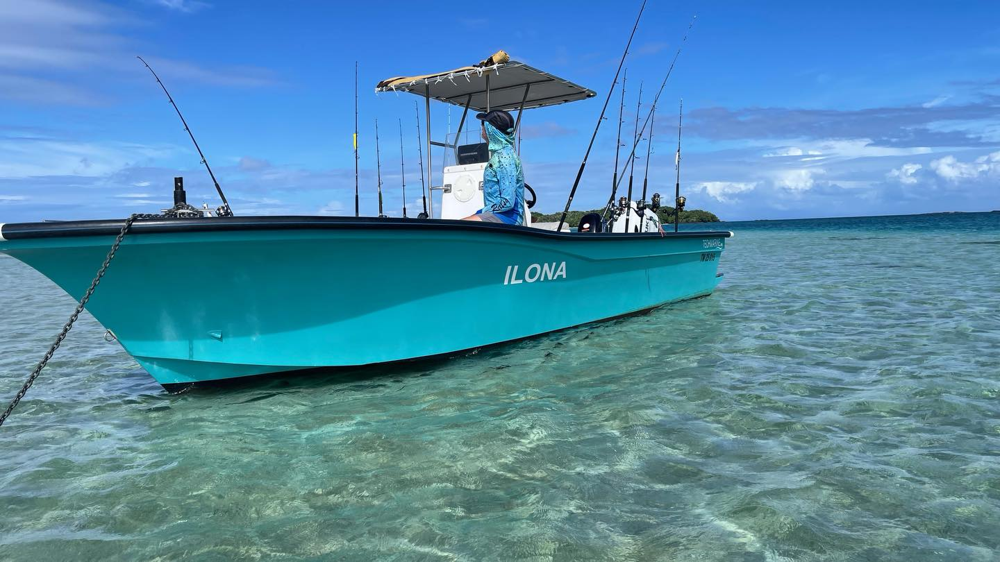

Thons
Sorties en mer pour chercher de belles sensations et une expérience sportive intense.
Sorties pêche, bateau et aventure en mer pour découvrir la baie d’Antongil autrement. Une expérience premium pour les passionnés, les voyageurs curieux et les séjours sur mesure autour de Masoala.
L’expérience
Pêche Sportive Masoala s’adresse aux voyageurs qui veulent vivre la mer autrement : départs privés, paysages sauvages, sensations fortes et organisation possible avec les hébergements de l’écosystème Masoala Experiences.
La baie d’Antongil offre un décor exceptionnel pour les sorties pêche : eau ouverte, récifs, côtes sauvages, lumières tropicales et proximité avec Masoala.
Le site reste volontairement simple : il présente l’expérience, le bateau, les prises possibles et les séjours combinés avec Manga Beach Hôtel et Paradise Valley Lodge.

Types de pêche
Les expériences peuvent être adaptées selon la météo, la saison, le niveau des participants et le programme du séjour.
Sorties en mer pour chercher de belles sensations et une expérience sportive intense.

Une pêche dynamique, idéale pour les passionnés de combats puissants.

Des prises marquantes dans un décor sauvage entre récifs et horizon marin.

Une approche plus accessible autour des zones côtières et récifs selon conditions.
Le bateau
Le bateau est au cœur de l’expérience : il permet d’organiser les sorties, d’explorer la baie et d’adapter les parcours selon le niveau, la météo et les objectifs de pêche.

Galerie
Quelques images pour montrer l’ambiance de l’expérience : bateau, lagons, pêche et aventure marine autour de Masoala.
Vidéos
Des séquences réelles de pêche sportive, bateau et ambiance marine autour de Masoala et de la baie d’Antongil. Les vidéos s’ouvrent directement sur YouTube.
Séjours combinés
Pêche Sportive Masoala fonctionne naturellement avec les autres sites de l’écosystème : hôtel à Maroantsetra, lodge nature à Ambanizana et portail Masoala Experiences.
Base confortable à Maroantsetra avant ou après les sorties pêche.
Immersion nature à Ambanizana pour prolonger l’expérience Masoala.
Portail simple pour relier hôtel, lodge et aventure marine.
Contact
Pour une sortie pêche, un séjour combiné ou une demande sur mesure, contactez l’équipe afin de vérifier les dates, la météo, le bateau et les possibilités d’hébergement.